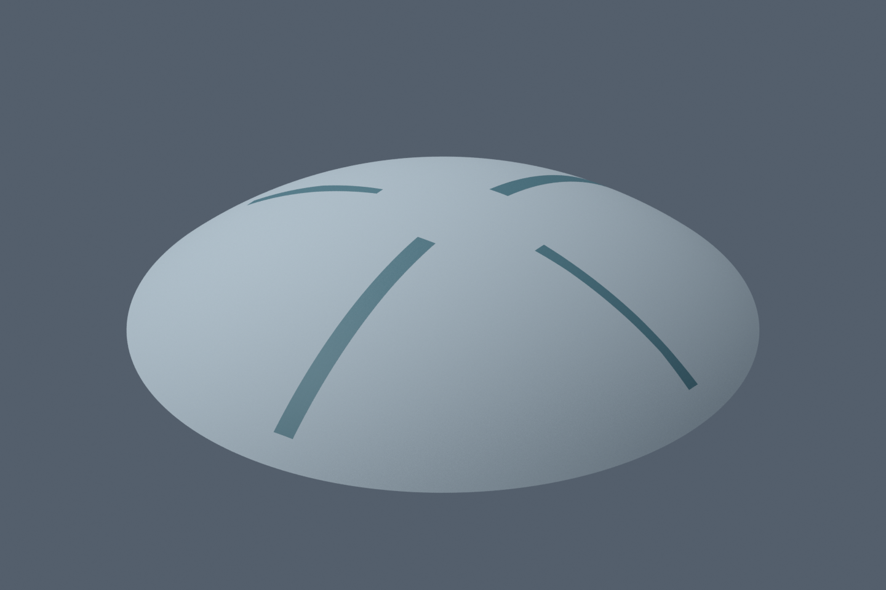

ZERO GROUND / WORK IN PROGRESS
ゼロ地の制作状況
正典の姿を、歩ける立体へ。ここでは制作中の実モデルを公開しています。

今回の変更
正典上面図の主要帯4方向の観測位置を修正。外殻は直径4,000m・高さ800m。
まだ制作中の部分
- 帯の位置合わせ段階。大型アーチの完成形ではありません。
- 中央冠・外周基部・門・内部都市は未完成です。
- Blenderの実モデル画像。UEへの本番統合は未完了です。
10分ごとに新しい検証済み成果を確認し、差分があるときに更新します。画像が変わらない間は制作日時も変わりません。